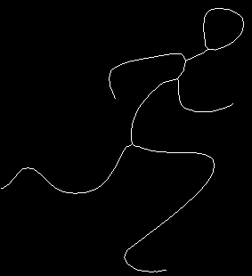

Thinning is the process of progressively getting rid of edge pixels until only the skeleton remains. Lines one pixel wide are the result. Whilst thinning is in fact a pure 3x3 neighbourhood operation, it is subtly difficult to get right, especially for an in-place algorithm. None of the connections must be broken, and lines two pixels thick must be thinned correctly.
A stylised drawing of a man was chosen as the test image. When he was thinned, this was the result.
The loops look wrong. In fact they are correct, when you zoom in on the original image, you see a couple of places where there are isolated unset pixels in inner corners. Since these are techncially holes, they must be preserved, and the loops are the result.
To fix up that problem I did a morphological close operation with a 3x3 structuring element to get rid of one pixel-wide holes. The resulting image is visually unchanged, but when we thin, the loops are gone.
This is the code used to generate the images
void testhinning()
{
int width, height;
int trans;
unsigned char *man;
unsigned char opal[256 * 3];
unsigned char pal[2 * 3] = { 0,0,0, 255, 255, 255 };
unsigned char se[9] = { 1,1,1, 1,1,1, 1,1,1 };
int i;
man = loadgif("images/man.gif", &width, &height, opal, &trans);
for (i = 0; i < width * height; i++)
man[i] = (man[i] == trans) ? 0 : 1;
morphclose(man, width, height, se, 3, 3);
savegif("manmorphclosed.gif", man, width, height, pal, 2, -1, 0, 0);
thin(man, width, height);
savegif("manmorphthin.gif", man, width, height, pal, 2, -1, 0, 0);
free(man)
}